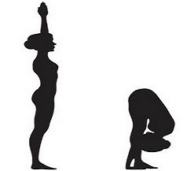

Standing Forward Bend (Hastapadasana)
- Stand straight with feet together and arms alongside the body.
- Breathing in, extend your arms overhead.
- Breathing out, bend forward and down towards the feet.
- Stay in the posture for 20-30 seconds and continue to breath deeply.
- Keep the legs and spine straight, hands rest either on the floor, beside the feet or on the legs.
- Breathing out, move the chest towards the knees, let the head relax and move it gently towards the feet. Keep breathing deeply.
- Breathing in, stretch your arms forward and up, slowly come up to the standing position.
- Breathing out, bring the arms to the sides.